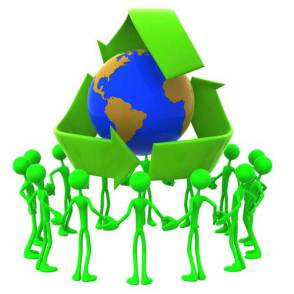

Dia mundial de la tierra
DÍA DE LA TIERRA, ¿CÓMO CELEBRARLO?
El día de la Tierra es una de las expresiones más bonitas y ecológicas que tenemos. Para el 22 de abril de 2016, el día de la Tierra, te proponemos pasar un día celebrando precisamente nuestro amor por la tierra, y por ello se dan diversos actos que nos permiten celebrar este día de un modo especial, dejando claro nuestro compromiso con el medio ambiente, la tierra y el entorno que nos rodea.
El Día de la Tierra o Día internacional de la Madre Tierra, Earth Day, se celebra cada año el día 22 de Abril (este 2016 caerá en viernes). El promotor de este día, es el senador estadounidense Gaylord Nelson, que decidió instaurar este día para concienciar a la población de los problemas comunes que nos afectan en torno a la contaminación, la conservación de la biodiversidad y otras preocupaciones ambientales para proteger la Tierra.
Las Naciones Unidas reconocen que la Tierra y sus ecosistemas son el hogar de la humanidad, de igual manera, están convencidas que si queremos conseguir un justo equilibrio entre las necesidades económicas, sociales y ambientales de las generaciones presentes y futuras, es necesario promover la armonía con la naturaleza y la Tierra. Es por esto que decidieron designar el 22 de Abril como el “Día Internacional de la Madre Tierra”. En este día es cuando de alguna manera todo el mundo toma conciencia de que tenemos que celebrar y cuidar el planeta. Es una fecha a modo de recordatorio de que todos hemos de poner de nuestra parte para que el planeta siga adelante. El cambio climático es un hecho, de modo que aunque para muchos líderes políticos parece que el problema les queda algo lejano, este es el día en el que también a ellos les llegue el aviso de que es momento de cambiar y de hacer algo por el cuidado de comunidades enteras, animales y personas de todo el mundo. Este 22 de abril de 2016 una oportunidad para impulsar el Día Internacional de la Madre Tierra y con ello llevar a cabo nuevas acciones encaminadas a luchar contra el cambio climático.
De este modo el 22 de Abril, (como sucede cada año) más de 1000 millones de personas en 190 países participan en este Día de la Tierra.Ciudades como San Francisco, San Juan, Bruselas, Moscú o Marrakech,se “visten de verde” en manifestaciones por la Tierra y en actor como los ciudadanos que plantan árboles, limpian sus comunidades y contactan con sus representantes políticos en defensa del medio ambiente. Nosotros en nuestra ciudad, comunidad o pueblo, podemos realizar todo tipo de acciones y actividades a modo de celebración, y de paso para unirnos en el cuidado del planeta todos juntos al menos, por un día.
¿QUE PODEMOS HACER?
Nosotros mismos, y al margen de sumarnos a los actos que se organizan en todos los países, podemos celebrar El día de la Tierra de una forma ecológica y de manera particular. ¿Qué podemos hacer? Pues podemos realizar pequeños actos que en conjunto que en realidad conformen grandes actos. Aquí os enumeramos 20 para que tengáis en cuenta.

Recomendar a un amigo que cambie de las lámparas incandescentes a las lámparas de bajo consumo.
Tenéis que hablar a la gente sobre los beneficios de las energías renovables, y lo malas que son las energías fósiles para nuestro mundo.
Aconsejar a todos que por un día, desconecten su conexión a internet y que apenas gasten electricidad.
Otra idea es plantar un árbol. E invitar a vuestros amigos a hacer lo mismo.
Enseñar a los niños a apreciar y a cuidar a la naturaleza. Y sobre la importancia de la biodiversidad.
Juega con los niños en la calle. Aprovecha este día para enseñarles por ejemplo la importancia de cuidar del medio ambiente pero no desde casa, o desde un ordenador.
Decir a esa persona que ha arrojado basura en la calle, que la levante y la tire en el contenedor de la basura.
Reciclar, y alentar a vuestros amigos también a que lo hagan. Que sepáis qué es biodegradable y qué no lo es.
No utilicéis bolsas de plástico, y si se tienen que usar, lo mejor es reciclarlas. Podéis utilizar las que os dan en los comercios como bolsas de residuos. Se pueden difundir estas ideas entre vuestros amigos. Miles de animales os lo van a agradecer.
Se puede difundir entre quienes no lo saben, qué es el calentamiento global, y qué asociación tiene con el cambio climático.
Aprovecha para hacer algo de limpieza social. En este día, algunas organizaciones se dedican a proponer distintos lugares que necesitan una limpieza pero están abandonados.
Calcula tu huella de Carbono. Con la ayuda de un calculador de carbono podrás conocer cuál es tu contribución personal al calentamiento global y de este modo, poner remedio y reducir tu propia contaminación.
También se pueden explicar a vuestros amigos qué son los gases de efecto invernadero, y cómo afectan a nuestro planeta produciendo el calentamiento del planeta.
Siempre que se pueda, se ha de evitar utilizar transportes que contaminen. Es mejor utilizar la bicicleta para ir a lugares cercanos, y si para los más cercanos, caminando.
Practica algún deporte. Ya os hemos aconsejado que salgas de casa, o que tomes consciencia del exterior que te rodea. Practicar un deporte te mantendrá en conexión con la tierra mientras te pones en forma. Quién sabe, quizás tomes la costumbre y gracias al Día de la Tierra comienzas a cuidarte más y también a tu entorno.
También puedes optar por cambiar tus productos de limpieza ya que estos cuentan con un buen número de componentes químicos, de modo que quizás ha llegado el momento de empezar a hacer tus propios productos de limpieza, y con ello que seas capaz de contaminar menos.
Por otro lado podemos intentar también nuevos habitos en nuestra alimentación, y de este modo puede que te apetezca dejar de comer carne y otros derivados, así como alimentos procesados y probar la comida vegetariana.
Comparte en redes sociales o a través de otros medios, tu “selfie” por el día Mundial de la Tierra.Seguro que en un día como este te apetecerá poder hacer fotos de todo aquello que hagas. Ahora es el mejor momento de todos para hacerte el “selfie” de rigor.
Comienza a pensar en cambiar a un coche eléctrico.
Haz que todos los días sean el día de la Tierra. Para ello, nada mejor que comprometerte a cuidar a diario de tu planeta. A veces las pequeñas acciones de todos juntos son las que dan pie a los grandes cambios.
No es broma, no es exageración. En los últimos 35 años hemos perdido un tercio de la vida silvestre global. Sí, un tercio. Es muchísimo.
Cuidemos a nuestro planeta, y logremos que los demás también lo cuiden. Por eso en este Día de la Tierra, hagan algo para el cambio, aunque sea algo tan pequeño como uno de estos 10 puntos que hemos enumerado.
-
Recomendaciones sencillas para salvar a la tierra
-
¿QUE PASARÁ SI NO LA CUIDAMOS?
-
Galeria
Salvemos nuestra tierra
Reflexion
Lo que yo pienso..
La tierra esta viva no la destruyas. Primero fue la tierra después el hombre, porque destruimos a nuestra creadora. Mientras la naturaleza grita y llora, el género humano esta sordo y sin alma. Corta un árbol y conviértelo en fuego y podrá arder; pero ya no producirá flores ni frutos. La Mejor Herencia que Podemos Dejarle a Nuestros Hijos es un mundo mejor. Solo debería existir Amor, Conocimiento y un Planeta en el que podamos Vivir Sanamente. El planeta tierra tiene vida, no seamos sus verdugos. Para la tierra poder salvar, curemos sus heridas y dejemos de contaminar. Si no eres capaz de respetar a la tierra atente a las consecuencias. El planeta es hermoso, pero tiene un gran defecto llamado hombre. El mundo es la suma total de nuestras posibilidades vitales.
Nosotros podemos aportar muchos cambios ecológicos y contribuir con pequeñas acciones desde nuestro hogar para ayudar al planeta, pero estos no alcanzarán. Lo que si se debe parar de manera urgente son los gases de efecto invernadero emanados a la atmósfera, la deforestación(menos árboles menos oxigeno), la matanza de animales, ya que muchos están al borde de la extinción, la contaminación del agua, del aire, del suelo. Lamentablemente si seguimos explotando los pocos recursos naturales que quedan de manera desmedida, vamos camino a que en el corto plazo estos se terminen. Cada uno sabe lo que hace y esta en su conciencia esa acción que realiza. Antes de pasar a las frases, les vamos a decir que tiempo siempre habrá para lograr ese gran cambio ecológico y positivo para salvar el planeta, pero sino hacemos ese gran cambio ahora, lamentablemente vamos hacia el peor escenario posible.
